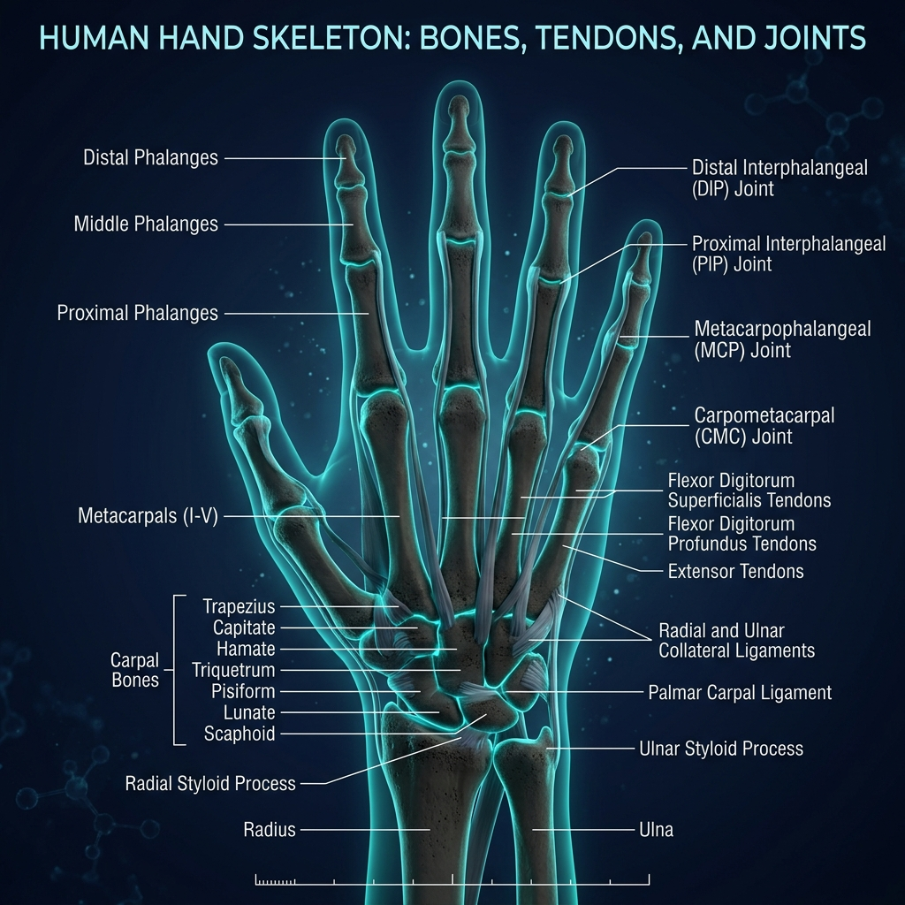

Soluciones quirúrgicas avanzadas especializadas en mano, codo y restauración de extremidad superior con tecnología de clase mundial.
Más de una década de excelencia quirúrgica respaldada por datos reales y pacientes satisfechos en toda la región.
Desde liberación del túnel carpiano hasta reconstrucción compleja de fracturas y reparación microquirúrgica.
SABER MÁS north_eastExploración y reparación articular mínimamente invasiva para codo de tenista, artritis y desgarros de ligamentos.
SABER MÁS north_eastProtocolos especializados de recuperación para deportistas, enfocados en un retorno rápido y seguro al rendimiento.
SABER MÁS north_eastCirugías reconstructivas para roturas de tendones flexores y extensores, permitiendo recuperar el movimiento completo.
SABER MÁS north_eastArtroplastia para articulaciones de la mano, nudillos y muñeca afectadas por desgaste articular o artritis severa.
SABER MÁS north_eastDescompresión de nervios periféricos en codo y muñeca para eliminar hormigueos y pérdida de sensibilidad.
SABER MÁS north_eastImágenes 3D de última generación y procedimientos asistidos por robótica para garantizar el mínimo tiempo de recuperación y la máxima precisión.

Técnicas especializadas para reparación de nervios y vasos con precisión microscópica.
Elegido Mejor Ortopedista por 5 años consecutivos en la revista médica regional.
Consultas de emergencia por lesiones deportivas programadas en un día hábil.
Desde que era estudiante de medicina, supe que quería devolverle a la gente algo tan simple —y tan profundo— como mover sus manos sin dolor. Hoy, después de más de 15 años dedicados a la cirugía ortopédica, esa motivación sigue siendo la misma.
Me especializo en mano, codo y extremidad superior, pero lo que más me importa es la persona que entra a mi consultorio. Escuchar tu historia, entender tu rutina y diseñar un plan que realmente funcione para ti —eso es lo que me hace levantarme cada mañana.
"El Dr. Gómez realizó mi reconstrucción de codo después de un accidente. Su precisión y el plan de rehabilitación me permitieron volver a las competencias en solo seis meses. ¡Increíble!"
"Llegué con mucho miedo a la cirugía de mano. El doctor me explicó todo con calma y paciencia. Ahora puedo tocar el piano nuevamente. Le estoy eternamente agradecida."
"Tres meses después de la cirugía ya estoy de vuelta en la cancha. El seguimiento post-operatorio fue impecable, siempre disponible para resolver mis dudas."
"Lo que más valoro es su honestidad. Me dijo exactamente qué esperar, sin falsas promesas. El resultado superó mis expectativas. Volvería a operarme con él sin dudarlo."
"Sufrí una fractura grave en el trabajo. El Dr. Gómez me atendió rápido y el resultado fue excelente. Mi mano funciona al 100% y pude reintegrarme sin problema."
"El Dr. Gómez realizó mi reconstrucción de codo después de un accidente. Su precisión y el plan de rehabilitación me permitieron volver a las competencias en solo seis meses. ¡Increíble!"
"Llegué con mucho miedo a la cirugía de mano. El doctor me explicó todo con calma y paciencia. Ahora puedo tocar el piano nuevamente. Le estoy eternamente agradecida."
"Tres meses después de la cirugía ya estoy de vuelta en la cancha. El seguimiento post-operatorio fue impecable, siempre disponible para resolver mis dudas."
"Lo que más valoro es su honestidad. Me dijo exactamente qué esperar, sin falsas promesas. El resultado superó mis expectativas. Volvería a operarme con él sin dudarlo."
"Sufrí una fractura grave en el trabajo. El Dr. Gómez me atendió rápido y el resultado fue excelente. Mi mano funciona al 100% y pude reintegrarme sin problema."